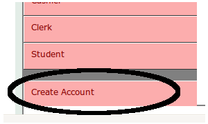
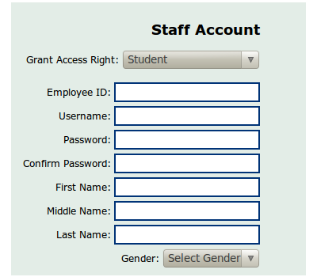
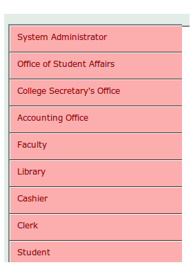
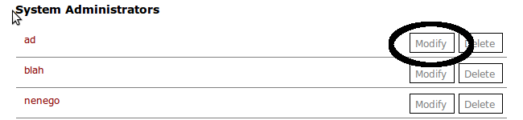
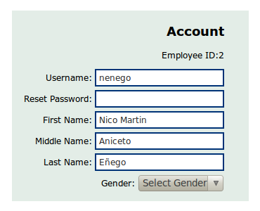
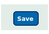
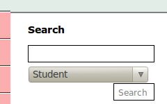

Online Help for System Administrators
How to create a new user account?
On the left side of the administrative homepage, select Create Account from the list of functions.

After getting redirected, enter the correct data on the corresponding fields. The desired account will now be created after pressing Create on the bottom part of the page.

After getting redirected, enter the correct data on the corresponding fields. The desired account will now be created after pressing Create on the bottom part of the page.
How to grant/modify the permissions or edit/reset the profile of a user account?
On the left side of the administrative homepage, select the group from the list of user account types where the user account you want to modify belongs to.

A complete listing of user accounts of the same type as the account you want to modify will appear. Select the desired account from those listings by pressing Modify.

The initial access level and the initial profile data will be displayed in the appropriate fields.

After setting the new access level or entering the new profile data, press Save to update the user account.

How to search for user accounts in the system?
To search for user accounts in the system, press the Search Account link in the upper right section (beside the Backup link) of the administrative homepage. Enter the appropriate keywords , select from the dropdown box the type of user account to be searched and press Search.

How to manually backup existing records in the system?
Aside from the current setting that the system automatically performs scheduled backups, system administrators can also execute manual backups. To execute manual backups, press the Backup link in the upper right section (beside the Search Account link) of the administrative homepage. Choose a filename for the database backup and press Export.